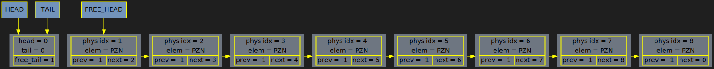
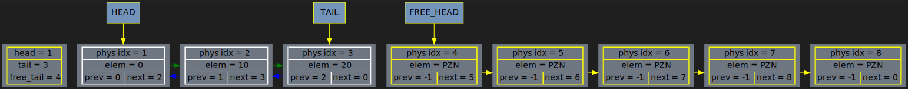
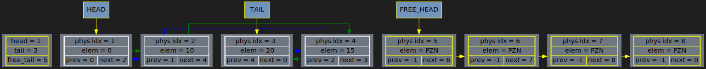
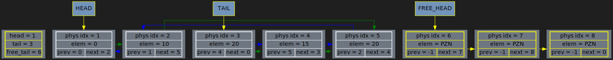
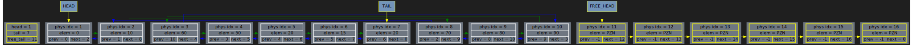

list_dump() called from src/main.cpp:13 main
list[0x7ffd926da440] initialised in src/main.cpp:10 main
{
real capacity = 9
size = 0
head = 0
tail = 0
free_head = 1
is_linear = true
{
i | prev | next | elem
0 | 0 | 0 | 2147483634
1 | -1 | 2 | 2147483634
2 | -1 | 3 | 2147483634
3 | -1 | 4 | 2147483634
4 | -1 | 5 | 2147483634
5 | -1 | 6 | 2147483634
6 | -1 | 7 | 2147483634
7 | -1 | 8 | 2147483634
8 | -1 | 0 | 2147483634
}
Ordered elements:
Physical indexes:
}

list_dump() called from src/main.cpp:19 main
list[0x7ffd926da440] initialised in src/main.cpp:10 main
{
real capacity = 9
size = 3
head = 1
tail = 3
free_head = 4
is_linear = true
{
i | prev | next | elem
0 | 3 | 1 | 2147483634
1 | 0 | 2 | 0
2 | 1 | 3 | 10
3 | 2 | 0 | 20
4 | -1 | 5 | 2147483634
5 | -1 | 6 | 2147483634
6 | -1 | 7 | 2147483634
7 | -1 | 8 | 2147483634
8 | -1 | 0 | 2147483634
}
Ordered elements: 0 10 20
Physical indexes: 1 2 3
}

list_dump() called from src/main.cpp:23 main
list[0x7ffd926da440] initialised in src/main.cpp:10 main
{
real capacity = 9
size = 4
head = 1
tail = 3
free_head = 5
is_linear = false
{
i | prev | next | elem
0 | 3 | 1 | 2147483634
1 | 0 | 2 | 0
2 | 1 | 4 | 10
3 | 4 | 0 | 20
4 | 2 | 3 | 15
5 | -1 | 6 | 2147483634
6 | -1 | 7 | 2147483634
7 | -1 | 8 | 2147483634
8 | -1 | 0 | 2147483634
}
Ordered elements: 0 10 15 20
Physical indexes: 1 2 4 3
}

list_dump() called from src/main.cpp:27 main
list[0x7ffd926da440] initialised in src/main.cpp:10 main
{
real capacity = 9
size = 5
head = 1
tail = 3
free_head = 6
is_linear = false
{
i | prev | next | elem
0 | 3 | 1 | 2147483634
1 | 0 | 2 | 0
2 | 1 | 5 | 10
3 | 4 | 0 | 20
4 | 5 | 3 | 15
5 | 2 | 4 | 20
6 | -1 | 7 | 2147483634
7 | -1 | 8 | 2147483634
8 | -1 | 0 | 2147483634
}
Ordered elements: 0 10 20 15 20
Physical indexes: 1 2 5 4 3
}

list_dump() called from src/main.cpp:35 main
list[0x7ffd926da440] initialised in src/main.cpp:10 main
{
real capacity = 17
size = 10
head = 1
tail = 7
free_head = 11
is_linear = false
{
i | prev | next | elem
0 | 7 | 1 | 2147483634
1 | 0 | 2 | 0
2 | 1 | 8 | 10
3 | 10 | 4 | 60
4 | 3 | 5 | 50
5 | 4 | 6 | 20
6 | 5 | 7 | 15
7 | 6 | 0 | 20
8 | 2 | 9 | 70
9 | 8 | 10 | 80
10 | 9 | 3 | 90
11 | -1 | 12 | 2147483634
12 | -1 | 13 | 2147483634
13 | -1 | 14 | 2147483634
14 | -1 | 15 | 2147483634
15 | -1 | 16 | 2147483634
16 | -1 | 0 | 2147483634
}
Ordered elements: 0 10 70 80 90 60 50 20 15 20
Physical indexes: 1 2 8 9 10 3 4 5 6 7
}
